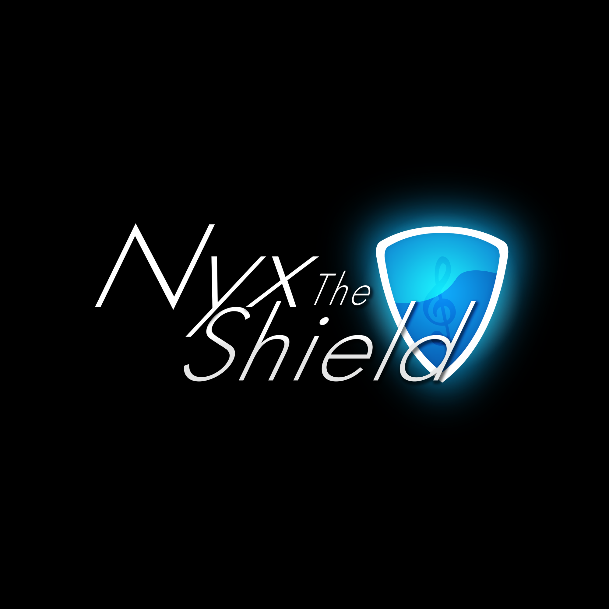

Tormented Souls 2
Unreal Engine gameplay systems, FMOD integration, technical audio architecture, and full music composition.

Multidisciplinary developer with 8+ years of experience in Unity and Unreal Engine.
Gameplay programmer, audio director and composer for Tormented Souls and Tormented Souls 2,
bridging systems engineering and music production.
Unreal Engine gameplay systems, FMOD integration, technical audio architecture, and full music composition.
Unity gameplay programming, audio systems architecture, UI implementation, console porting support, and original soundtrack.
Original soundtrack production and music direction for animated web series.
Large-scale orchestral and hybrid soundtrack production for internationally recognized web series.
Open to new collaborations in gameplay programming, technical audio, and music composition. Available for freelance and full-time opportunities.
Email: nyxtheshieldmusic@gmail.com